Gurukul Educational Academy, located in Pipara Rural Municipality - 06, Ratauli, Mahottari, is a leading child-friendly educational institution in Nepal dedicated to providing quality early childhood and primary education. Established in 2080 B.S., the school has consistently focused on nurturing the holistic development of children from Nursery to Grade 5. Under the guidance and leadership of our esteemed Principal, Mr. Ranjit Kumar Yadav, the academy strives to foster a learning environment that balances academics, creativity, moral values, and social skills. Parents and guardians seeking a safe, supportive, and academically enriching environment for their children in Mahottari, Ratauli, and surrounding areas find Gurukul Educational Academy to be the ideal choice for foundational education.
Our curriculum is designed to ensure that children develop strong fundamentals in core subjects including Mathematics, English, Science, and Social Studies, while also engaging in arts, cultural activities, and physical education. The school emphasizes interactive learning methodologies, hands-on activities, and group projects that stimulate curiosity, critical thinking, and problem-solving skills among young learners. By integrating innovative teaching practices with traditional values, Gurukul Educational Academy provides a comprehensive educational experience that prepares students for the challenges of higher education and life beyond school.
Gurukul Educational Academy places immense importance on creating a safe and stimulating environment for every child. The classrooms are bright, airy, and equipped with child-friendly furniture, learning resources, and colorful educational materials. Safety measures are meticulously maintained, ensuring that parents feel confident entrusting their children to the care of the school. Our experienced teachers are trained not only in subject expertise but also in child psychology, enabling them to identify individual learning styles and provide personalized attention to each student. This individualized approach allows students to flourish academically, emotionally, and socially.
Parental involvement is considered a cornerstone of student success at Gurukul Educational Academy. The school encourages active participation of parents through regular parent-teacher meetings, workshops, and school events. Feedback from parents is highly valued, ensuring that teaching methods and school programs are continuously refined to meet the evolving needs of students. By fostering collaboration between teachers and parents, Gurukul Educational Academy ensures that children receive consistent support both at school and at home, enhancing their overall development and confidence.
In addition to academic excellence, Gurukul Educational Academy emphasizes moral education and value-based learning. Programs and activities are designed to teach students honesty, empathy, discipline, teamwork, and respect for others. These core values are integrated into daily classroom interactions, extracurricular programs, and community service initiatives. Students learn not only to excel academically but also to become responsible, ethical, and compassionate members of society. This holistic focus on character development sets Gurukul Educational Academy apart from other schools in Mahottari and Ratauli.
The academy provides extensive opportunities for extracurricular engagement, including sports, arts, music, dance, and cultural celebrations. Participation in sports and physical activities fosters teamwork, resilience, and physical fitness, while arts and cultural programs enhance creativity, self-expression, and appreciation for heritage. Through school competitions, exhibitions, and performances, students build confidence, public speaking skills, and leadership qualities. These experiences complement classroom learning, ensuring that students develop in all dimensions—intellectual, physical, social, and emotional.
Gurukul Educational Academy has embraced modern teaching technologies to enrich the learning experience. Digital tools, multimedia resources, and interactive lessons are integrated into the classroom to make learning engaging and effective. Students are introduced to age-appropriate technology applications, educational software, and interactive storytelling that enhance comprehension, creativity, and digital literacy. By combining traditional teaching methods with contemporary educational technologies, the academy equips students with the skills required to thrive in a rapidly changing world.
Admissions at Gurukul Educational Academy are straightforward and transparent, welcoming children from diverse backgrounds. The school provides an inclusive learning environment, ensuring equal opportunities for all students. Parents can apply online or visit the school to discuss enrollment procedures, curriculum details, and facilities. The admission process is designed to be convenient for parents while ensuring that every child who joins receives personalized guidance and attention from day one. Children are welcomed warmly, fostering a sense of belonging, confidence, and enthusiasm for learning.
The academy’s leadership, under Principal Ranjit Kumar Yadav, is committed to continuous improvement in educational quality, student engagement, and community relations. Teachers and staff are regularly trained in new pedagogical methods, child development strategies, and classroom management techniques. The school organizes workshops, seminars, and educational events to ensure that both teachers and students are exposed to the latest trends in education and holistic development. This commitment to ongoing professional development contributes to the school’s excellence and reputation in Mahottari.
Parents looking for a reliable and enriching educational environment in Mahottari, Ratauli, or nearby regions can rely on Gurukul Educational Academy for nurturing their child’s potential. The academy combines academic rigor with creative exploration, ethical learning, and interactive experiences, making it a premier choice for foundational education. The child-friendly atmosphere ensures that students feel safe, motivated, and excited to learn every day. Our mission is to shape not only academically proficient students but also confident, compassionate, and capable individuals ready to face future challenges with resilience.
For easy communication and engagement, the academy provides multiple channels for parents to reach out, including direct email at educationalacademygurukul@gmail.com, WhatsApp contact at 9808202684, and active social media presence on Facebook, Instagram, and TikTok. Parents can stay updated on school events, achievements, and announcements while participating in online discussions and community initiatives. This connectivity strengthens the relationship between the school and families, creating a supportive and collaborative educational ecosystem.
By enrolling at Gurukul Educational Academy, children benefit from a structured, vibrant, and nurturing educational program that balances academics, ethics, creativity, and physical development. The focus on early childhood education and primary education ensures that children build a strong foundation in literacy, numeracy, critical thinking, and social skills. The school’s comprehensive approach prepares students to succeed not only in exams but also in life, cultivating curiosity, problem-solving abilities, and a love for lifelong learning.
Gurukul Educational Academy is proud to be a part of the local community in Mahottari, contributing to educational growth, child development, and social well-being. Our alumni demonstrate the effectiveness of our programs, excelling in further education and embracing values instilled at the school. Parents continue to recommend Gurukul Educational Academy for its safe environment, dedicated faculty, child-focused teaching methods, and commitment to student success. The academy remains a pillar of quality education in Pipara Rural Municipality - 06, Ratauli, and surrounding areas.
Enroll your child at Gurukul Educational Academy today and provide them with a joyful, enriching, and high-quality educational experience. Witness the growth, creativity, and confidence that our students develop through engaging lessons, supportive teaching, and ethical guidance. Gurukul Educational Academy remains committed to academic excellence, holistic child development, and community engagement, ensuring every student achieves their full potential in a safe, nurturing, and inspiring environment.
Gurukul Educational Academy is a joyful and child-friendly school where learning is fun!
We focus on creativity, discipline, moral values, and academic excellence.
Message From Principal
Mr. Ranjit Kumar Yadav
Welcome to Gurukul Educational Academy.
Our mission is to build strong foundation for children with love, care, and quality education.
 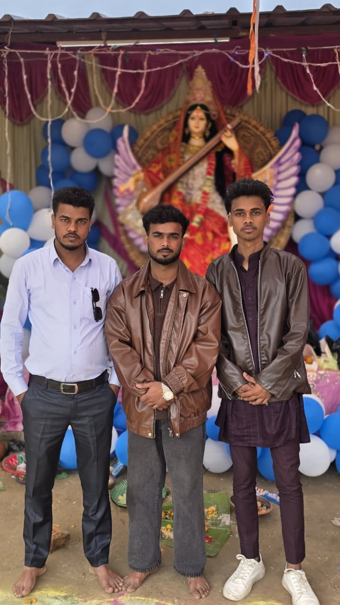
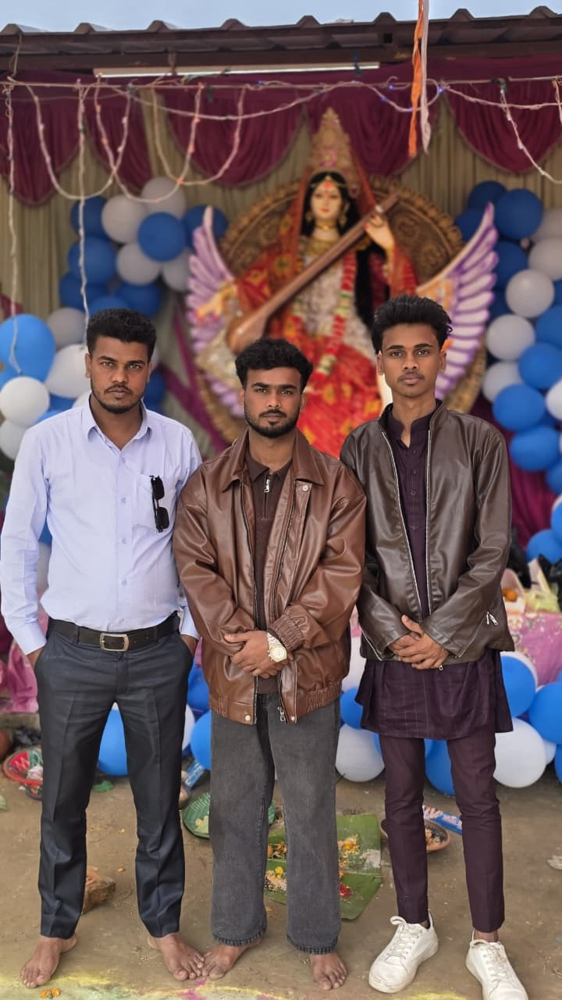
 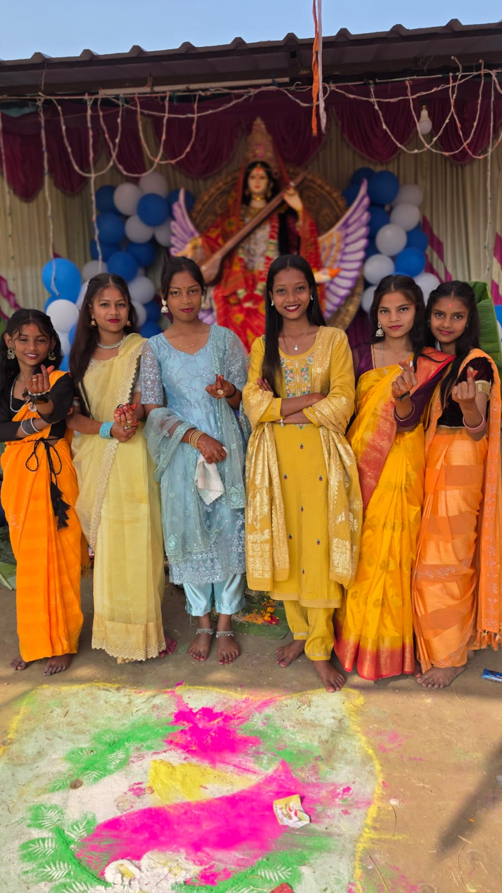
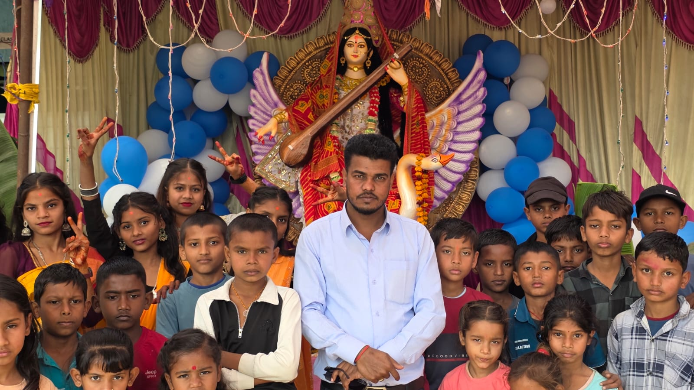
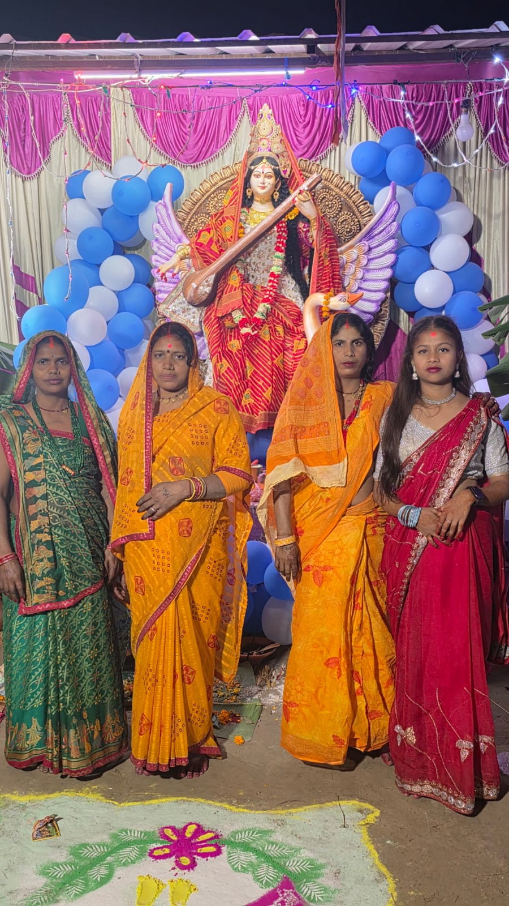
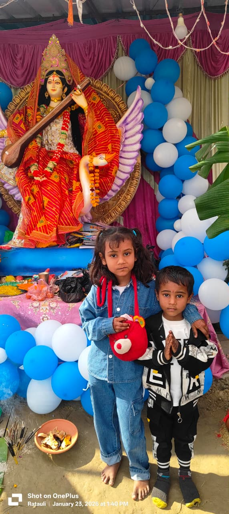
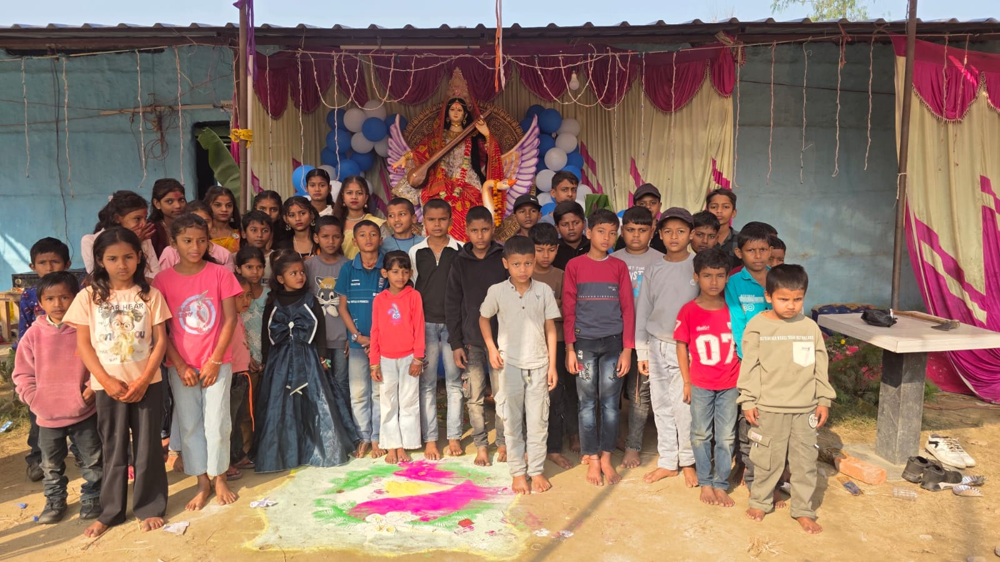
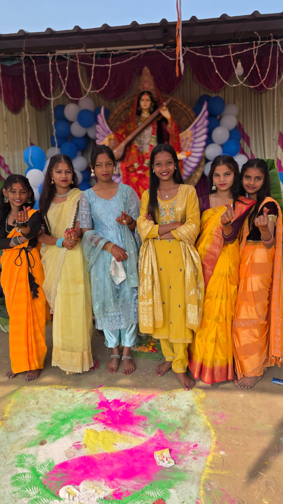
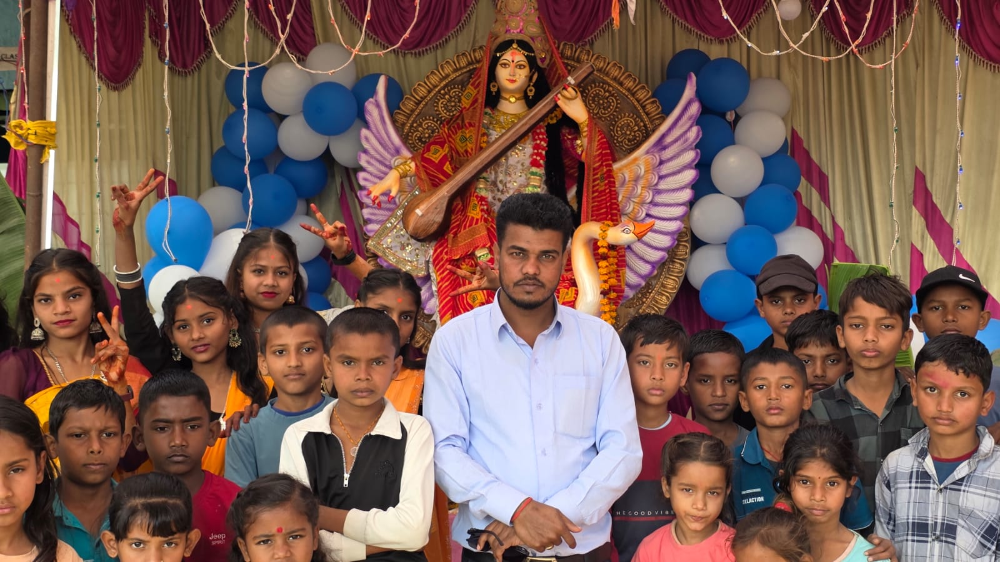
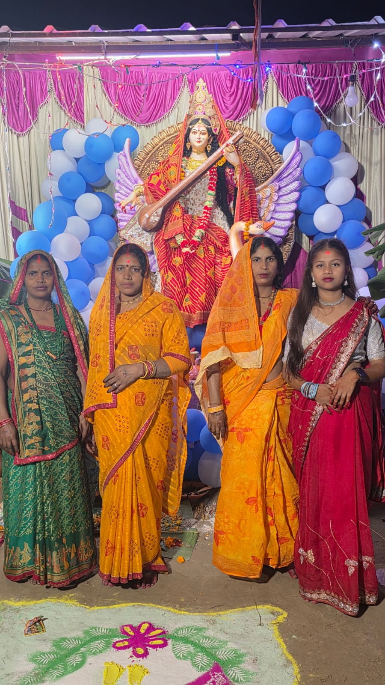
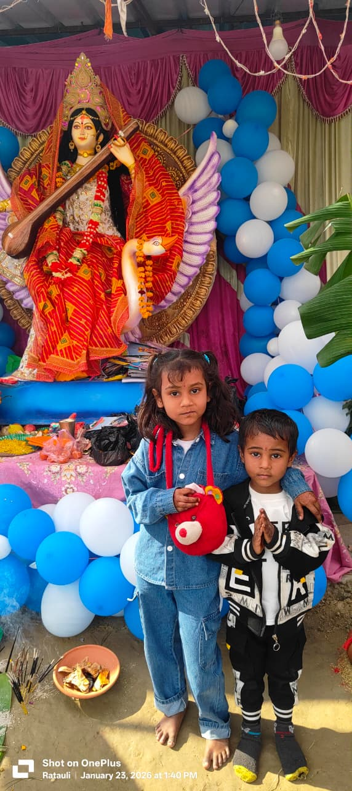
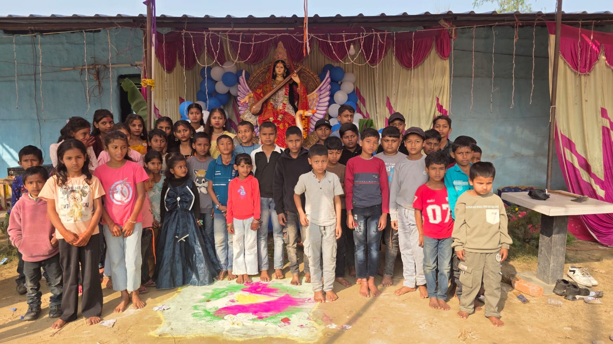
🌐 Follow Us
📘 Facebook 📷 Instagram 🎵 TikTok